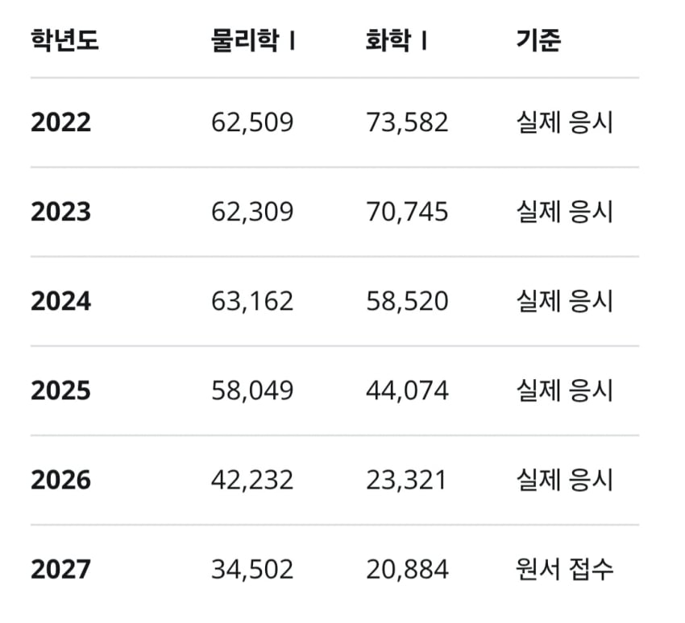
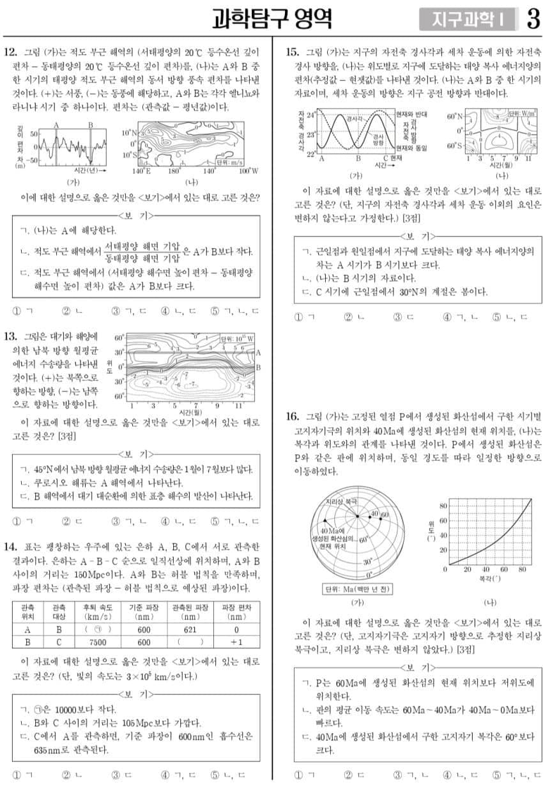

응시자 수가 반토막 났으니까
2027실제응시자는 저것보다 10%정도 적어서 화학은 2만명대도 무너짐.
즉 1등급이 전국에서 1천명도 안 나온다는건데 이 정도면 고인물 때문에 상위권만 분포 이상한거 충분히 가능함



예전의 그 이과조무사 지1이 아니라고 함...

응시자 수가 반토막 났으니까
2027실제응시자는 저것보다 10%정도 적어서 화학은 2만명대도 무너짐.
즉 1등급이 전국에서 1천명도 안 나온다는건데 이 정도면 고인물 때문에 상위권만 분포 이상한거 충분히 가능함

생애소득
압살할
의치한
재수못함

Ai
Ai
삼대남
검거
요즘대학
물로켓충
삼대남특